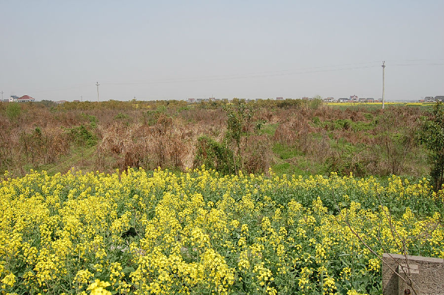

嘉兴市文物保护网 · 市级文物保护点 · 2020-11-02 · 原文

干家埭遗址位于嘉兴市秀洲区王江泾镇虹南村20组，原属虹阳新力村干家埭庄，南临干家埭港，据地表陶片和出土器物可知为新石器时代马家浜文化晚期遗址。遗址主要分布在水田中间，另有部分在一块高墩上，面积共约1000平方米，文化层厚约90厘米，农田内文化层距田地表35—40厘米，高墩内文化层距地表70厘米。1983年以前在干家埭村庄的农田中就有“龙骨”发现，近年来又有大量的兽骨及少量陶片发现，采集物以兽骨为主，陶片次之，另有石器若干。该遗址年代久远，属马家浜文化晚期类型，为研究先民的起居生活提供了实证，有较高的历史和科学价值。1992年公布为嘉兴市文物保护点。